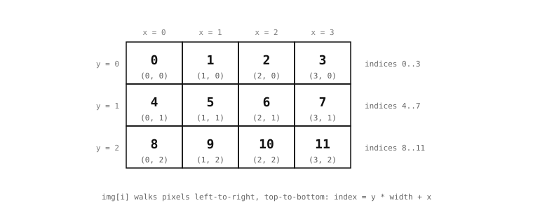

5.4. Чтение и запись пикселей¶
Большинство операций над изображением скрывают свою попиксельную работу внутри одного вызова метода, где циклы, обрабатывающие каждый пиксель, выполняются на нативной скорости. Тем не менее, бывают случаи, когда коду приложения нужно обратиться напрямую к одному конкретному пикселю: прочитать значение в определённой позиции, записать в него новое значение, считать одну точку для шага калибровки или отладить значение в известном месте. Модуль image предоставляет такой уровень доступа через две формы адресации, каждая из которых соответствует своему способу мышления о том, где находится пиксель.
5.4.1. Адресация по координатам¶
Самая естественная форма – та, для которой раздел «Координаты» уже выработал словарь: назвать пиксель по его декартовым (x, y). get_pixel() принимает (x, y) и возвращает значение в этой позиции; set_pixel() принимает те же (x, y) вместе со значением и записывает его.
Что возвращают или принимают эти вызовы, зависит от формата изображения. Изображения в оттенках серого, бинарные и Bayer несут одно значение на пиксель – яркость для оттенков серого, 0 или 1 для бинарного, один отсчёт цветового канала для Bayer – поэтому get_pixel() возвращает одно целое число. RGB565 несёт три цветовых канала, упакованных в 16 бит, и get_pixel по умолчанию распаковывает их в кортеж (r, g, b), отображая каждый канал в диапазон 0 – 255.
Поведение по умолчанию можно изменить с любой стороны. Передача rgbtuple=False в get_pixel для изображения RGB565 возвращает необработанное 16-битное упакованное слово – ту же форму, которую возвращает линейный индекс, и эффективную форму, когда приложение собирается записать то же упакованное значение обратно. Передача rgbtuple=True для одноканального изображения делает обратное: сохранённое значение перед возвратом преобразуется в кортеж RGB888, а изображения Bayer проходят через шаг дебайеризации на месте. Этот аргумент существует для того, чтобы вызывающий код мог запрашивать пиксели в едином цветовом пространстве независимо от того, как нижележащее изображение их хранит.
Сжатые изображения – JPEG и PNG – не поддерживаются методами get_pixel и set_pixel. Их байты не представляют пиксели в известных позициях, и эти методы вызывают ошибку вместо того, чтобы возвращать значение, которое ничего бы не значило.
На практике эти шаблоны выглядят так:
v = img.get_pixel(40, 30) # grayscale: int 0..255
img.set_pixel(40, 30, 255) # write white
r, g, b = img.get_pixel(40, 30) # RGB565: defaults to (r, g, b) tuple
img.set_pixel(40, 30, (255, 0, 0)) # write red
Если запрошенные (x, y) находятся за пределами изображения, get_pixel возвращает None, а set_pixel ничего не делает. Это снисходительно по замыслу: многие алгоритмы проходят близко к краям изображения и ненадолго индексируют позиции вне диапазона, и тихое отсутствие действия менее разрушительно, чем исключение при каждом таком случае.
5.4.2. Адресация по линейному индексу¶
Другая форма – адресовать пиксели по их позиции в нижележащем буфере. Вспомните компоновку буфера: пиксели хранятся строка за строкой, сначала все пиксели верхней строки, затем все пиксели следующей, и так далее до нижней. Такое расположение означает, что у каждого пикселя есть единственный целочисленный индекс, отсчитываемый от 0 в левом верхнем углу и увеличивающийся вдоль каждой строки по очереди. Пиксель с координатой (x, y) имеет линейный индекс y * width + x.

Пиксели адресуются как по декартовым (x, y), так и по линейному индексу, который проходит буфер строка за строкой, слева направо.¶
Модуль image предоставляет этот индекс через обычную нотацию индексации Python: img[i] читает пиксель по линейному индексу i, img[i] = value записывает его. Индексная форма возвращает необработанное сохранённое значение для данного формата, а не распакованный кортеж, который get_pixel() возвращает по умолчанию. Это различие важно, потому что выбранный ранее формат определяет, как выглядит необработанное значение:
Пиксели в оттенках серого и Bayer возвращаются как 8-битные целые числа.
Пиксели RGB565 и YUV422 возвращаются как 16-битные целые числа – упакованное слово.
Бинарные пиксели возвращаются как
0или1.Пиксели JPEG и PNG возвращаются как 8-битные целые числа, по одному байту сжатого потока за раз. Эти значения непрозрачны – они являются частями сжатого кодирования, а не пикселями в каком-либо обычном смысле.
Индексная форма подходит коду, который уже мыслит в терминах смещений в буфере: цикл, проходящий каждый пиксель один раз, алгоритм, которому нужно перепрыгивать на строку за раз, или код, преобразующий между компоновками буфера. Коду, который мыслит в терминах координат x и y, лучше подходят get_pixel и set_pixel; обе формы адресуют одни и те же пиксели через разные ментальные модели.
Объект Image также является итерируемым. for v in img: проходит буфер в том же порядке по строкам, выдавая необработанные значения по одному пикселю за раз, а len(img) – это количество пикселей для несжатых форматов или количество байтов для сжатых потоков.
5.4.3. Почему попиксельный Python – это медленный путь¶
Практическое замечание, о котором стоит честно сказать. Проход по изображению по одному пикселю за раз из Python медленный. Изображение 320 × 240 в оттенках серого содержит 76 800 пикселей; вызов get_pixel() для каждого из них в цикле for выполняет миллионы инструкций байткода MicroPython, чтобы сделать работу, которую эквивалентный нативный метод мог бы завершить за несколько сотен микросекунд. Это не малый множитель. Это разница между скриптом, который обрабатывает кадры в реальном времени, и тем, который ползёт значительно ниже частоты кадров камеры.
Почти каждый метод в интерфейсе Image существует потому, что есть более быстрая, нативная версия распространённого попиксельного шаблона. Цикл, складывающий два изображения, становится одним нативным вызовом. Цикл, сглаживающий каждый пиксель усреднением с соседями, становится другим. Цикл, классифицирующий каждый пиксель по порогу, становится третьим. Задача приложения, в большинстве случаев, – распознать, какой метод, работающий со всем изображением, соответствует работе, которую выполнил бы цикл, и обратиться к нему вместо того, чтобы писать цикл вручную.
Попиксельное чтение и запись по-прежнему являются правильным инструментом, когда ничто другое не подходит – внесение конкретного измерения обратно в буфер, считывание одной позиции для шага калибровки, отладка значения в известном месте. Суть в том, что это медленный путь, используемый, когда методы, работающие со всем изображением, не имеют формы, нужной приложению, а не как способ работы с пикселями по умолчанию.